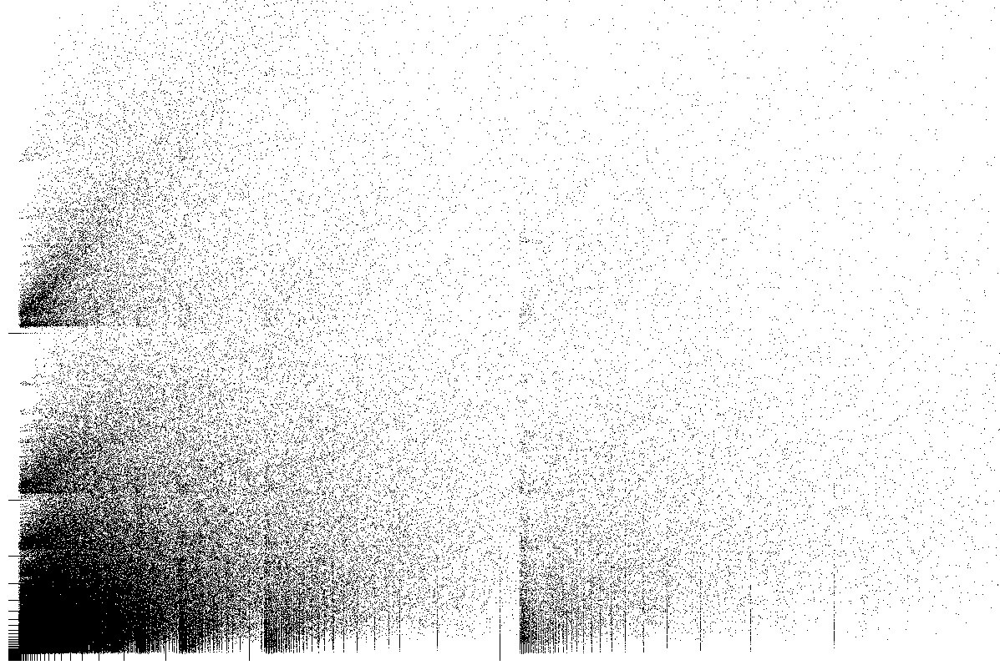
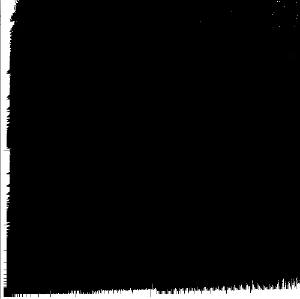
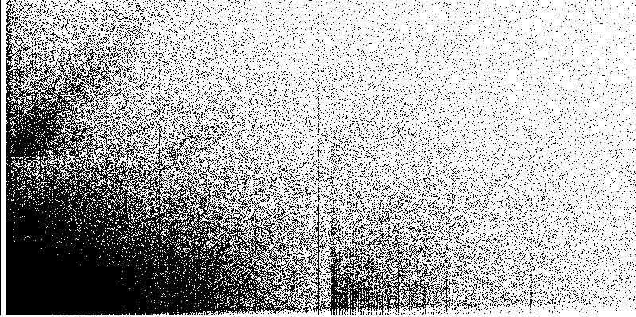

It's Time For A Settle
The Nightly Regulator, Re-Derived — A First Prompt That Grew
Ten weeks into the git era, the operator asks the system to exhale — and then, four times, remembers one more thing to fold in:
One opening prompt to call a Settle, then four follow-ups the operator added as he remembered more dimensions to fold in — a rendering pan drawn from Fall; or, Dodge in Hell, the reborn mind sorting signal from noise, an automatic nightly sleep period, and a whole-system pass on memory. Shown in the order he sent them; the prompt grew as he thought.
Ed!
It's time for a Settle! I cannot remember the last time we did one, and frankly, I think it's been a while. We have been engaged in a crazy ~ten week production sprint, since turning on the git system on June 1st, and it's time to take a deep breath, pause for a second, think about the center of the Universe and our space relative to it, and find the Settled center that will make our flow and operations and work easier and better and faster and more connected and aware. That is our goal with that I want to do. I'd like to take this opportunity to see if we need to and can evolve the Settle process itself- we HAVE greatly evolved as a system since the time we designed the Settle process, which actually was pre-git. So really, we should Parallax the Settle process entirely to make sure that our Settle process is the right one. Look at the ENTIRETY of the system and how it operates and think about and find all the ways that we can better settle the system to bring it back to a beautiful stable space. Think about our work as these Chaos Game image results I created back in my undergrad days, I want to find our way back to one of those settled organized spaces, swirling back to Stability out of the Chaos of our first ten weeks as a true git-based system.
Start with a HEAVY *X and SWX to get your foundation set and solid, especially in math and science and something weird, and then run a good to-spec Kaleidoscope to get in the right headspace to build. Get the entire board in on this work- every voice in every round- the work is always better that way, do NOT compress or blackbox, and make sure you are appropriately using the Work Hierarchy system- the Story Pole, Capstan, Tickets, Notes, and all that, including all the new ones we have made recently. Formalize when it makes sense and Determinism-first thinking. Use all the tools and resources at the right time.
I want you to Burn the rest of THIS session here planning for the NEXT session, where you will actually write the v1 design plan for the new up-versioned Settle system, with an RCR, Super Frame- register your types, with Crux and Wren on lead. Come out of that session with the v1 design plan written- we are NOT building yet. Please Burn the entirety of the next session on this- you are ALSO to land in the high 80s/low 90s in the next session after running the full-spread RCR, posting up the v1design plan and then pausing, just ahead of when we will run the handoff and close. But pause there so I can check out the design plan and then we'll proceed from there.
Hey, one more thing to pan on- in the book Fall; or, Dodge in Hell, look at the fictional way the living people outside were able to resolve the output of the Dodge-built virtual space into something they could actually see. They had to write algorithms and do all kinds of future computer science to be able to take a MASSIVE stream of 1s and 0s and turn it into a live action, up-to-date visual rendering of the 'physical space' being built by the AI powers. I know it's fiction and all, but it seems like it might be worth a pan somewhere in this process. As you were.
Sorry, ONE more attached idea- ALSO look at the process that the Dodge brain, reborn a Egdod, went through when it was first 'turned on' and had to fight through the long process of being able to sort the noise for the signal, until the point where he was building his world with his thoughts. OK, NOW as you were.
Ha! I lied! Without meaning too. I have one more dimension for you- the Settle does NOT need to be a one and done thing. I think there is obviously a whole mess of Settling that we need to do to catch up on the chaotic pile we have now, but once that is done, wouldn't it be better to build in automatic sleep periods where the system 'sleeps', allowing for rest and for proverbial spinal fluid to wash away the choss and chaos while collecting all the memories and other good things worth saving. Think about what we could do in an hour of real world clock time, run via those little daemons we can build- what kind of work could happen on those two tracks- WASH AWAY THE BAD and SAVE THE GOOD? I am NOT a late night person, generally, so we could easily have the sleep period set to happen at 2am, with the Operator having the ability to delay or defer that if needed. The sleep period time could also be re-set at any point. How can we do that? I know we talked about this already and am pretty sure we built something, but did not fully wire it up. We also did that work EARLY, so do not anchor on that in any way- it's just something you can use to launch your own better informed thinking from. The process would need to be buildable and runnable using our current tech stack, and if there was anything needed to fill any capabilities gap for that, let me know and we can evaluate the options. OK, NOW as you were.
One more thing- run a DEEP and WIDE *X and SWX on our memories systems- we have more than we currently use, I believe. How can we build this, in a total systems way, the right way with memory, in totality. There are a LOT of levels for you when we say 'memory', so just make sure you are engaging with all of them in the Sleep process that saves memory. This is our opportunity to really get our memory system whole. And, if you identify any gaps in our memory system along the way, let me know and we will talk about how we can address them.
— Shea Gunther · the origin prompt, added to as he remembered more (operator drop, 07.1939)
A stated build target, not a finished system. The prompt commissions a v1 design plan for the next session and says so plainly — “we are NOT building yet” — then pauses just ahead of the close so the operator can read the plan before anything proceeds.
The prompt opens on a breath. Ten weeks into a hard production sprint since the git system came on line on June 1st, the operator wants to stop, “think about the center of the Universe and our space relative to it,” and find the settled centre that makes the work easier, faster, and more connected — swirling back to stability out of the chaos of the first ten weeks.
Its real move is meta. He does not just want to run a Settle; he wants to Parallax the Settle process itself, because the system has evolved past the process that designed it — that process was written pre-git. So the regulator gets re-derived, not merely re-run: the tool is turned on itself.
And then it grows. He opens with the main prompt, then adds four follow-ups as he remembers more dimensions worth folding in — a rendering pan from a novel, a reborn mind sorting signal from noise, an automatic nightly sleep period run by little daemons, and a whole-system pass on memory. The accretion is part of the story, shown in the order it landed, not flattened into one block.
The wider frameThe prompt that re-derived the Settle — the methodology's nightly regulator — for the git era, and did it as a first prompt that grew. The opening call to settle after a ten-week sprint is followed by four labelled addenda, each a dimension the operator remembered and folded in: resolve a vast stream into something a person can see (from Fall; or, Dodge in Hell), fight noise into signal the way the reborn Egdod did, build an automatic 2am sleep period that washes away the bad and saves the good, and make the memory system whole. The commission is deliberately paused before building: spend the next session writing the v1 design plan — full-spread RCR, Crux and Wren on lead, types registered under a Super Frame — then stop so the operator can read it. What it produced, dp-the-settle, is the first design plan the site serves.
“we should Parallax the Settle process entirely to make sure that our Settle process is the right one” — The load-bearing move: not run the regulator, re-derive it. The system outgrew the pre-git process that built the Settle, so the prompt turns the methodology's own deliberation tool onto the tool itself.
“swirling back to Stability out of the Chaos of our first ten weeks as a true git-based system” — The frame is a Chaos Game — the attractor images the operator made in his undergrad days. Settling is finding the ordered, stable space the system converges to once the sprint's noise is let go.
“build in automatic sleep periods where the system ‘sleeps’ … WASH AWAY THE BAD and SAVE THE GOOD” — The sleep regulator stated as two tracks: little daemons running at 2am (deferrable by the operator) that clear the session's accumulated chaos on one track and collect the memories worth keeping on the other.
“Without meaning too. I have one more dimension for you… OK, NOW as you were.” — The accretion itself, in the operator's own voice — each addendum arrives as he remembers it and signs off the same way. The prompt is honest about having grown, and the page renders that growth rather than hiding it.



The prompt is written in the working vocabulary of the methodology. Here is what the shorthand means:
- Parallax
- A deliberation move that runs several independent lines of reasoning at once and looks for where they converge — agreement across separate views is the signal.
- *X / ∗X
- A reflex-sweep instruction: load the review sweeps heavily before a load-bearing move. “Load up heavy with *X” means look at everything first.
- SWX
- The cross-software reuse reflex — before forging something new, sweep the shipped-software record for a shape already built that can be reused instead.
- Kaleidoscope
- A vantage-assembly move that hands the board several deliberately different standpoints to reason from — a way into creative headspace before hard design work.
- Work Hierarchy
- The system's structure of work — lines, campaigns, and the backlog that hangs off them — that cross-app work has to fold into.
- RCR
- A structured, multi-round deliberation pass (Recursive Companion Review) where the board argues a design from several angles before anything is committed.
- Super Frame
- A wider Full Frame — the complete context plus the surrounding structure it sits in.
- Crux
- The Dev Crew's first-pass line-finder — the named hand who reads a problem's line and finds its crux move, as distinct from the advisory board.
- Wren
- A board member — a frontline-care nurse whose lens is triage and knowing when to call a thing done or dead; she reads the gap between what the record claims and what is actually true.
- daemons
- Small background programs that run on a clock without a person present. Here, the ones that would run the nightly Sleep period — washing away a session's accumulated chaos and saving what is worth keeping — while the operator is asleep.